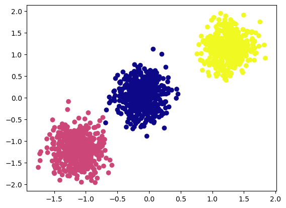
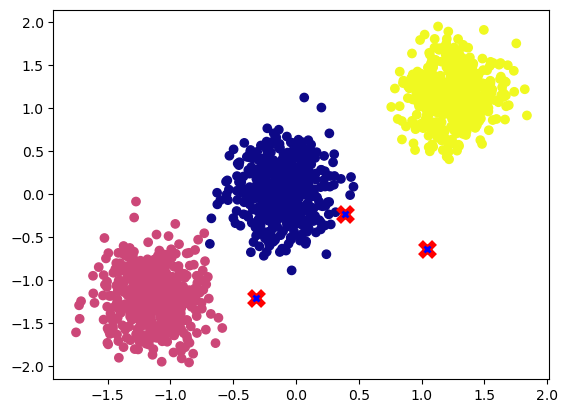
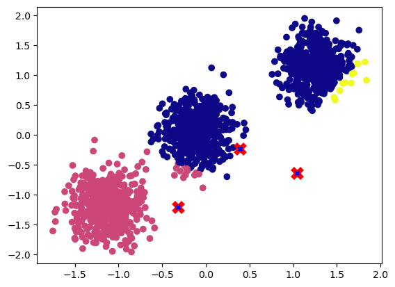
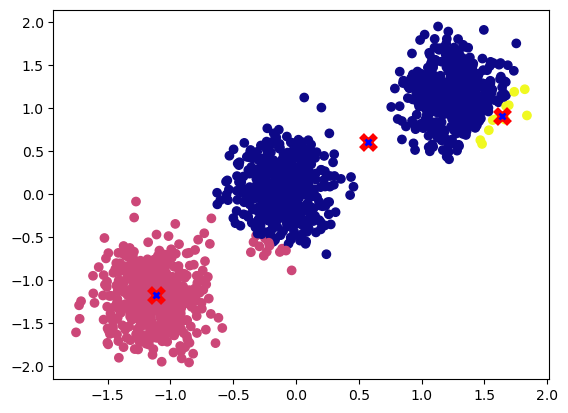
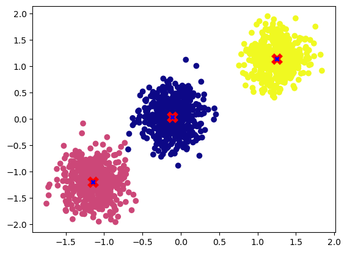

import torch
a = torch.tensor([1, 2, 3])
b = torch.tensor([4, 5, 6])
c = a + b
ctensor([5, 7, 9])In PyTorch, broadcasting refers to the automatic expansion of a tensor’s dimensions to match the dimensions of another tensor during an operation. This allows for element-wise operations between tensors of different shapes, as long as certain rules are followed.
For example, consider the following operation:
import torch
a = torch.tensor([1, 2, 3])
b = torch.tensor([4, 5, 6])
c = a + b
ctensor([5, 7, 9])Here, a and b are both 1-dimensional tensors with shape (3,). When performing the addition operation, PyTorch will “broadcast” a to have the same shape as b, resulting in a tensor c with shape (3,) and values [5, 7, 9].
Broadcasting can also occur when one tensor has fewer dimensions than the other. For example:
a = torch.tensor([[1, 2, 3],
[4, 5, 6]])
b = torch.tensor([7, 8, 9])
c = a + bHere, a has shape (2, 3) and b has shape (3,). To perform the addition, PyTorch will broadcast b to have shape (1, 3), resulting in a tensor c with shape (2, 3) and values.
ctensor([[ 8, 10, 12],
[11, 13, 15]])Broadcasting is a powerful feature in PyTorch that allows for efficient operations between tensors of different shapes, and is an important concept to understand when working with deep learning models.
In this section we will be using broadcasting principles to showcase the power of broadcasting and implement our own version of K-means clustering which can run on PyTorch. K-Means is a clustering algorithm that is used to group a set of data points into a specified number of clusters. Here is the general pseudocode for the K-Means algorithm:
k, and the maximum number of iterations, max_iter.k data points as the initial centroids for the clusters.max_iter times:
Let’s try to create some random data using scikit-learn make_blobs function.
import numpy as np
import pandas as pd
from sklearn.datasets import make_blobs
import matplotlib.pyplot as plt
n_samples = 1500
X, y = make_blobs(n_samples=n_samples, centers = 3, random_state=3)
## Normalize
X = (X - X.mean(axis=0))/X.std(axis=0)
X = torch.from_numpy(X)
def plot_cluster(data, y, points=[]):
fig, ax = plt.subplots()
ax.scatter(data[:,0], data[:,1], c=y, cmap='plasma')
for i, point in enumerate(points):
ax.plot(*point, markersize=10, marker="x", color='r', mew=5)
ax.plot(*point, markersize=5, marker="x", color='b', mew=2)
plot_cluster(X, y)
As we can see above, we have created 1500 samples with three clusters.
For this exercise, we will use a random initialization for the centroids, although there are more sophisticated techniques such as the “kmeans++” method that can be used to improve the convergence of the algorithm. For the sake of simplicity, we will stick with a random initialization.
torch.manual_seed(2)
centroids = torch.randn((3,X.shape[1]))
print(f"Shape: {centroids.shape} \n {centroids}")Shape: torch.Size([3, 2])
tensor([[ 0.3923, -0.2236],
[-0.3195, -1.2050],
[ 1.0445, -0.6332]])Let’s visualize the randomly initialized centroids.
plot_cluster(X, y, centroids)
As we can see in the visualization above, the centroids are random.
We have 1500 samples and three randomly initialized centroids. Now to compute distance between these centroids and samples we can make use of broadcasting which is vectorized and significantly improve our compute times as we don’t need to loop each sample and centroid to calculate distance.
To do broadcasting, we need to make sure that the two tensors are compatible for broadcasting, to achieve this we will add a additional dimension using unsqueeze method.
print(f"Before unsqueeze: \n Data shape: {X.shape}, Centroid shape: {centroids.shape}")
print(f"\nAfter unsqueeae: \n Data shape: {X.unsqueeze(1).shape}, Centroid shape: {centroids.unsqueeze(0).shape}")Before unsqueeze:
Data shape: torch.Size([1500, 2]), Centroid shape: torch.Size([3, 2])
After unsqueeae:
Data shape: torch.Size([1500, 1, 2]), Centroid shape: torch.Size([1, 3, 2])We can now compute the Euclidean distance between all 1500 samples and the three centroids in a vectorized format. To do this, we will subtract each centroid from the samples, square the differences, and sum them.
square_dist = (X.unsqueeze(1) - centroids.unsqueeze(0)).square().sum(axis=-1)
print(f"Distance of 1500 samples with three centroids : {square_dist.shape}")Distance of 1500 samples with three centroids : torch.Size([1500, 3])For assigning sample to the nearest cluster we can use the argmin function to find the cluster with smallest distance for each sample.
print(pd.DataFrame(square_dist.argmin(-1)).value_counts())0 974
1 515
2 11
dtype: int64We can see that 974 samples are close to centroid 0 and 515 samples are near to centroid 1 and 11 samples are close to sample 2. Now let’s pack all of the above in a simple function.
def nearest_centroid(data, points):
'''
Find nearest centroid for each sample
'''
return (data.unsqueeze(1) - points.unsqueeze(0)).square().sum(axis=-1).argmin(-1)
## Check if it works as before
nc = nearest_centroid(X,centroids)
print(pd.DataFrame(nc).value_counts())0 974
1 515
2 11
dtype: int64Let’s visualize the cluster assignment.
plot_cluster(X, nc, centroids)
To obtain the new centroid coordinates, we need to compute the mean of all the samples that are assigned to the cluster and update the centroids accordingly.
def update_centroids(data, nc):
return torch.cat([data[nc == val,:].mean(axis=0, keepdim=True) for val in torch.unique(nc)], 0)
new_centroids = update_centroids(X, nc)Lets visualize the new updated centroids.
plot_cluster(X, nc, new_centroids)
We can see updated centroids moved to the middle of the cluster.
Let’s set max_iter to 20 and run the cluster assignment and updating centroid for max_iter times.
max_iter = 20
torch.manual_seed(2)
centroids = torch.randn((3,X.shape[1]))
for _ in range(max_iter):
nc = nearest_centroid(X,centroids)
centroids = update_centroids(X, nc)Let’s visualize the centroids after running it max_iter times.
plot_cluster(X, y, centroids)
We can see now that the centroids have converged to the desired cluster center.
Let’s package all the above functions to do K means.
def nearest_centroid(data, points):
return (data.unsqueeze(1) - points.unsqueeze(0)).square().sum(axis=-1).argmin(-1)
def update_centroids(data, nc):
return torch.cat([data[nc == val,:].mean(axis=0, keepdim=True) for val in torch.unique(nc)], 0)
def k_means(X, k, max_iter=20, device="cpu"):
## Random initialization
if device == "cpu":
X = X.detach().cpu()
else:
X = X.to(device)
centroids = torch.randn((k,X.shape[1])).to(device)
## Updating centroids for max_iter
for iter in range(max_iter):
new_centroids = update_centroids(X, nearest_centroid(X,centroids)).to(centroids.dtype)
## Early stopping
if torch.equal(centroids,new_centroids): break
else: centroids = new_centroids
return centroidsLet’s check if the function runs correctly.
centroids = k_means(X,3)
plot_cluster(X, y, centroids)Let’s run the function on GPU.
centroids = k_means(X,3, device="cuda").detach().cpu()
plot_cluster(X.detach().cpu(), y, centroids)Broadcasting is a powerful feature in PyTorch that allows you to perform arithmetic operations on tensors of different shapes, as long as they are “broadcastable.”
As we have seen above, broadcasting allows you to perform operations on tensors of different shapes as if they were the same shape, by repeating or “broadcasting” the values of the smaller tensor along the missing dimensions. This can be a useful way to perform element-wise operations on tensors without having to explicitly pad or resize them.